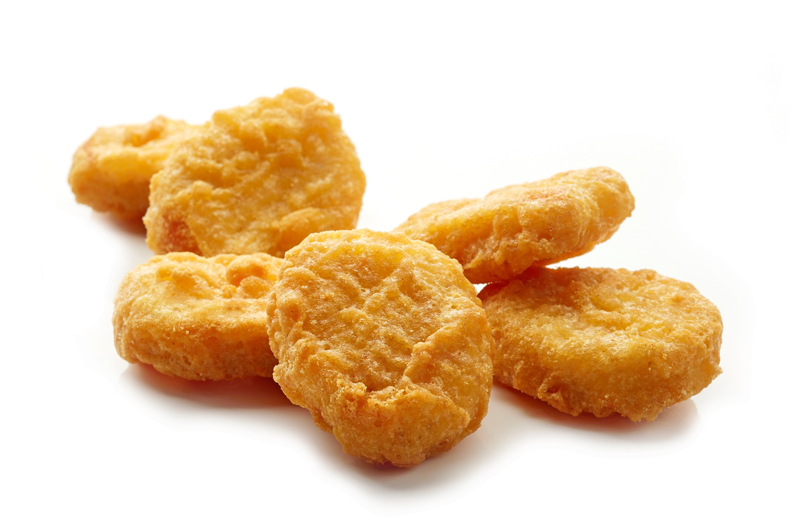
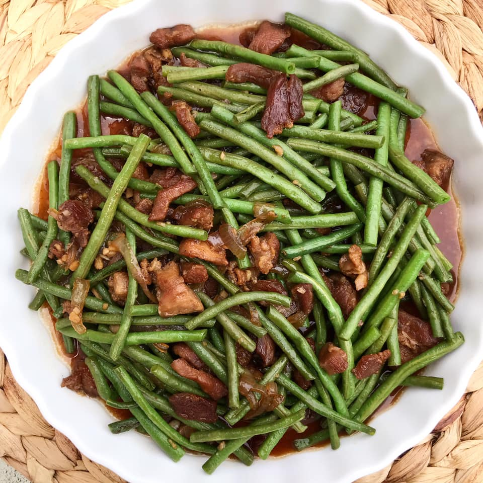

Kristel Antonette B. Quezon
Facebook
Twitter
Instagram
MCM Blackboard
Favorite Foods
Burger
Pasta
Nuggets

Adobong Sitaw

Achievements
Progess in Software Design (20%):
20%
Progess in Capstone 3 (65%):
65%
Progess in Other Courses (9%):
9%
More About Me
Childhood
I was born in Tabuk,KSA and raised in Abu Dhabi, UAE.